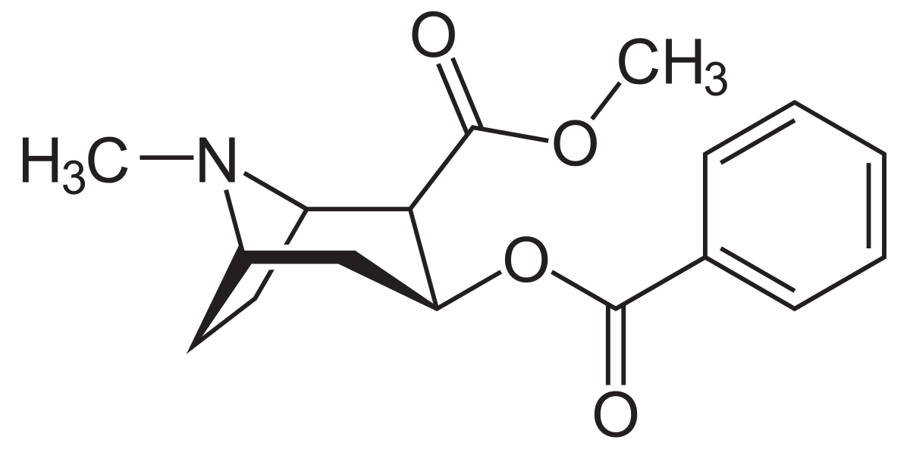
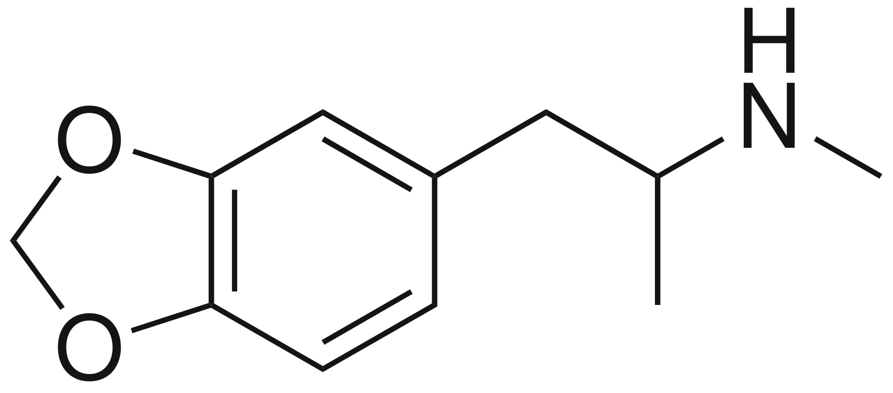
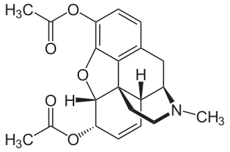
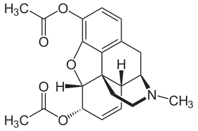

Drogurile sunt substanțe organice, naturale sau de sinteză, al căror consum creează dependență fizică și psihică și tulburări grave ale activității mentale, ale percepției și ale comportamentului.
Drogurile produc inițial un efect de plăcere urmat de efecte neplăcute, de o stare de depresie. Acest ciclu plăcere - tensiune duce la o pierdere a controlului asupra utilizării drogului. Dozele dic ce în ce mai mari produc efecte dezastruoase asupra organismului și în final moartea.
Cauzele care determină cosumul de droguri sunt multiple. Unii oameni trăiesc un sentiment de plictiseală, de vid, de singurătate, sunt deprimați și neliniștiț, suferă de anumite tulburări de comportament. Alții nu reușesc să facă față problemelor la școală, facultate, serviciu, familie. Relațiile cu ceilalți sunt prea complicate, le este teamă de viitor și nu știu ce vor face în viață. Sintetizând cele mai sus prezentate, putem spune că factorii care determină consumul de droguri sunt:
- – problemele personale, necazurile, disperarea;
- – singurătatea, lipsa de prieteni;
- – curiozitatea, tentația fructului oprit;
- – dorința de senzații tari;
- – plictiseala, lipsa unor preocupări interesante;
- – teribilismul (nevoia de a ieși în evidență);
Marijuana
|
Marijuana - este cel mai raspandit drog dupa alcool, cafea si tutun; se obtine prin uscarea si tocarea frunzelor sau prin extragerea rasinei; se fumeaza sau se amesteca in mancare. |
|
|
In doze mici, efectele sunt asemanatoare celor produse de alcool, pe cand dozele mari au efecte halucinogene; nu induce dependenta fizica; dupa administrare, toxicomanul trece prin trei faze: a. Excitatie: logoree, largirea spatiului, slabirea memoriei, dilatarea pupilelor, incalzirea pie-lii, accelerarea pulsului, cresterea apetitului (in special pentru dulciuri), comportament impre-vizibil (uneori devine psihotiv, agresiv, delirant), lipsa de coordonare motorie si a simtului pericolului. b. Extaz: repaus, beatitudine. c. Somn. Consumul cronic favorizeaza aparitia bronsitelor, a infectiilor pulmonare, a cancerului laringian si pulmonar. |
|
Tetrahidrocanabinolul o rășină uleioasă, derivat benzo-piranic de tip canabinoidic. Este substanța activă principală din cannabis, întâlnită în drogurile vegetale hașiș și marijuana. El a fost pentru prima dată izolat în anul 1964 de Raphael Mechoulam din Israel.
Nume IUPAC |

Cocaina (Crack, coke, C, zăpadă, piatră)
|
Cocaina este un alcaloid tropanic cristalin, care se obține prin extragerea chimică din frunzele de coca, cu ajutorul unui solvent precum petrolul sau kerosenul. Este un stupefiant cu efect stimulant puternic al sistemului nervos central, fiind unul dintre cele mai răspândite droguri care produc dependența consumatorului. |
|
|
Efecte: Extazul (care durează 15-30 minute) este urmat de o depresie profundă, irascibilitate, agitaţie, oboseală mentală şi o dorinţă uriaşă pentru următoarea doză. Efecte pe termen scurt: dilatarea pupilelor, mucozităţi, energie în exces, euforie, siguranţă de sine, lipsa poftei de mâncare, creşterea temperaturii corpului, a ritmului cardiac şi a presiunii arteriale, epilepsie, anxietate, amnezii, acte de violenţă, instabilitate, panică, senzaţie de persecuţie, paranoia; imediat dupa doză: dureri de cap de circa o oră, tremurături, senzaţie de cald/rece; câteva zile de depresie. Efecte pe termen lung: hepatita A, B sau C, paranoia, infarct cerebral sau miocardic, dureri abdominale, comportament agresiv, halucinaţii (care pot provoca acte de automutilare, suicid, omor), dependenţă psihică. |
|
 |
MDMA
|
MDMA (3,4-metilendioxi-N-metilamfetamină) este o substanță psihoactivă empatogenă din familia amfetaminelor. Ea este întâlnită de obicei sub formă de tablete sau capsule numite ecstasy, ce pot conține de asemenea și alte substanțe. |
|
|
Efectele MDMA ului sunt: |
|  |
LSD
|
Dietilamida acidului lisergic de asemenea numit LSD-25 este un drog psihedelic semisintetic, ce aparține familiei de triptamine. Probabil cel mai cunoscut și răspândit psihedelic, LSD-ul a fost folosit în principal ca un drog recreațional, o unealtă în ajutorul diverselor practici precum meditația, psihonautică, proiecte artistice și psihoterapie psihedelica. |
|
|
Efectele apar în 40-60 de minute, iar maximul efectului se realizează dupa 2-4 ore și se menține 6-12 ore. LSD-ul este un puternic psihedelic, inducând alterarea percepției, a gândirii și modificări de comportament. Există două stări induse de acest drog: starea euforică, denumită „trip”, și cea indusă de efectele adverse, denumită „bad trip”. Acțiunea toxică are loc în special la nivelul autoreceptorilor seretoninergici, pe care îi inhibă, determinând o creștere a concentrației serotoninei în sânge și implicit apariția efectelor acesteia. |
Heroina
|
Heroina - este o pulbere de culoare variabila, de la galbui la maroniu, cu gust amar si miros slab de otet; puterea analgezica este de 3-5 ori mai mare decat a morfinei; se poate injecta, inhala sau fuma; injectiile amplifica efectele si sunt cele mai periculoase; este tot un derivat al opiului. |
|
|
Actioneaza asupra sistemului nervos central, reducand pragul sensibilitatii dureroase; induc un echilibru psihic aparent, anxietatea disparand o data cu durerile; de asemenea, provoaca o stare de euforie, de detasare de realitate si de inhibare a senzatiilor de foame si de sete. a. Psihice: scaderea inteligentei si vointei; slabirea memoriei; intreaga existenta este aservita nevoii de a-si administra drogul; declinul intregii personalitati; anularea responsabilitatilor familiale si profesionale; scaderea apetitului; scaderea libidoului. b. Fizice: toxicomanul devine slab; palid; pupile mici, fixe; tremur usor al mainilor si pleoapelor; unghii casante, caderea parului; constipatie; varsaturi; respiratii rare, puls scazut. |
|
|
 

Amfetamina
|
Amfetamina este un stimulent potent al sistemului nervos central (SNC), utilizat în tratamentul tulburării de hiperactivitate cu deficit de atenție (ADHD), narcolepsiei, și obezității. Amfetamina a fost descoperită în 1887 și există sub forma a doi enantiomeri:levoamfetamina și dextroamfetamină. |
|
|
Stimulentele sunt folosite in exces atat pentru sporirea performantei, cat si in scopuri recreationale. In cazul primei situatii, acestea suprima apetitul (ceea ce rezulta in pierderea greutatii), sporesc capacitatea de efort, concentrarea si atentia. Efectele euforice ale stimulentelor cresc daca pastilele sunt zdrobite inainte de a fi prizate sau injectate. Unii consumatori dizolva tabletele in apa si injecteaza compozitia obtinuta. Acestia isi pun in pericol sanatatea, deoarece anumite ingrediente din compozitia pastilelor ilegale nu sunt dizolvabile si pot bloca unele vase sanguine (capilarele). |
Știați că?
- Semintele de cannabis au fost utilizate pentru prima oara ca sursa de mancare, de catre chinezi, in urma cu circa 8.000 de ani.
- Dupa alcool, marijuana este cel mai folosit drog din lume.
- Conform unui studiu, se estimeaza ca 162 de milioane de oameni consuma marijuana cel putin odata pe an, iar 22.5 milioane consuma zilnic. Conform unui alt studiu, zilnic, 6.000 de americani utilizeaza marijuana pentru prima data.
- Marijuana s-a dovedit a fi un bun ajutor in medicina. Pacientii care sufera de cancer sau de SIDA consuma marijuana, aceasta atenuand starile de greata si durere. De asemenea marijuana este benefica si pentru cei cu afectiuni neurologice.
- Se spune ca, in timpul celui de-al Doilea Razboi Mondial, soldatii americani foloseau marijuana pe campul de lupta.
- Pablo Emilio Escobar Gaviria (n. 1 decembrie 1949 – d. 2 decembrie 1993) a fost un celebru baron al drogurilor columbian ,care la apogeul carierei sale deținea 80% din traficul de cocaină din SUA.
- În cei aproape 18 ani in care a condus cel mai mare imperiu al drogurilor, numele de Pablo Escobar este asociat cu uciderea a peste 200 de politiști și 600 de civili.
- În jur de 25.000 de oameni au fost prezenți la ceremonia funerară a lui Pablo Escobar.